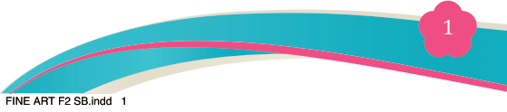
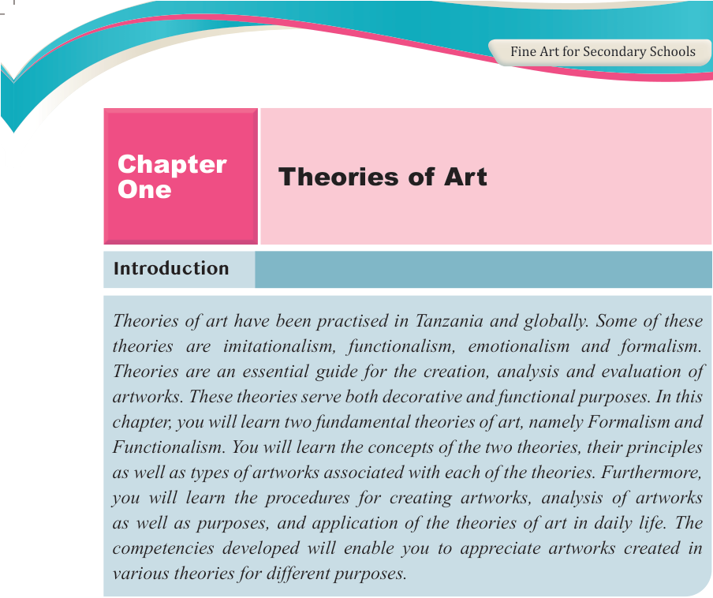

Fine Art for Secondary Schools

1

Student’s Book Form Two

Introduction
Theories of art have been practised in Tanzania and globally. Some of these theories are imitationalism, functionalism, emotionalism and formalism.
Theories are an essential guide for the creation, analysis and evaluation of artworks. These theories serve both decorative and functional purposes. In this

chapter, you will learn two fundamental theories of art, namely Formalism and
Functionalism. You will learn the concepts of the two theories, their principles as well as types of artworks associated with each of the theories. Furthermore, you will learn the procedures for creating artworks, analysis of artworks as well as purposes, and application of the theories of art in daily life. The competencies developed will enable you to appreciate artworks created in

various theories for different purposes.
Think
How artworks interpret people’s social life.
Concept of the theory of art
Theory of art is an academic discipline that deals with characterization of artistic
expressions in all styles of art. It is considered as an analytical tool used to criticize
works of art regardless of their context. Theories of art can be regarded as means for judging or interpreting the works of art.
Formalism theory of art
Formalism is a theoretical approach in art that emphasizes the visual elements and
structural composition of an artwork over its subject matter, meaning, content or emotional message. It primarily focuses on how the artwork is made and what
it visually represents or looks like. According to this theory, a work of art is
considered to be successful when it demonstrates the mastery of artistic elements
Chapter
One
Theories of Art
04/08/2025 13:54